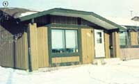
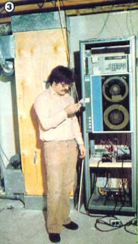
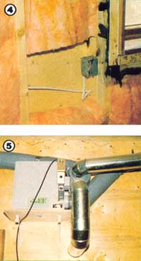
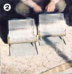
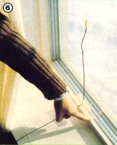
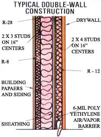

This building technique proves that-sometimes, at least-"more" can be better than "less"!
[1] The unassuming exterior of a superin-sulated home.
[3] A computer monitored the performance of the Energy Showcase homes.
[4] An interior view of a double wall. [5] An air-to-air heat exchanger (this unit removes fumes from a paint storage room).
[2] Two electric heaters warmed one Saskatoon house.
STAFF PHOTOS
[6] Quadruple glazing (note the wide windowsill).
In its coverage of energy-efficient housing, this publication has generally focused on homes that rely on active or passive solar heating systems. Recently, however, MOTHER began to look into an offshoot of passive solar technology . . . the superin-sulated house. And it seems that such structures have impressively low heating needs, even when they're situated in extremely cold areas.
To get a closer look at the specialized building techniques involved in superinsulation construction, two of MOTHER'S staffers visited Saskatoon (located in the Canadian province of Saskatchewan), where 14 such houses have been built as part of a regional Energy Showcase program.
Saskatoon typically experiences close to 11,000 heating degree-days annually (by comparison. New York, San Francisco, and Chicago have-respectively-4,870, 3,000, and 6,175 degree-days each year), and is therefore an almost ideal spot to test the mettle of any purported energy-efficient housing concept. [EDITOR'S NOTE: Our traveling staffers were quick to report that Saskatoon's weather can be very severe. On one day during MOM'S February trip, for example, the temperature stood at -25°F, a figure that didn't take into account the wind whipping across the prairie. In the course of that day's shooting, our photographer temporarily set a plastic-coated cable release on the ground . . . only to have the wire snap in two when he tried to pick it up!]
A COOPERATIVE VENTURE
Back in 1980, Saskatoon's Energy Show-case-sponsored by the governments of Canada and Saskatchewan, the local branch of the Housing and Urban Development Association, and the city itself-invited builders to submit plans for low-energy residences. Of these, 14 designs-which were to be built by 13 different construction companies-were chosen. In the selection process, two criteria stood above all others: The homes had to have less than 2,150 square feet of heated space, and the designs could not differ significantly in appearance from the more conventional houses already being constructed by the companies.
Each of the builders then received a $6,000 compensation for the additional expenses that often go hand in hand with energy-efficient construction. (It's estimated that some $5,000-or about 6%-of the cost of each project home resulted from the superinsulation features. However, builders are finding, now that they've constructed a number of these houses, that this expense can be reduced.) The residences ranged in price from $65,000 to $120,000 in Canadian dollars, with the average being around $85,000 ($1.00 Canadian equals roughly 80 cents U.S.). The approximate cost per square foot was between $40 and $45... again, in north-of-the-border currency. All of the homes were built on speculation and are now owned privately… and the buyers of the energy-efficient dwellings received a discount on their mortgage interest rates for taking part in the program.
SUPERINSULATION
Many folks-when they first hear the term-likely think that "superinsulation" involves nothing more than cramming every nook and cranny with fiberglass batts. But while the Energy Showcase houses do have more insulation than the norm, their efficiency is equally dependent on several interrelated construction details, which include the following:
• A continuous air/vapor barrier. The home's shell, basement, and ceiling are literally shrouded with sheets of 6-mil polyethylene . . . which are carefully overlapped and joined with acoustical sealant, a pliable butyl rubber compound.
• An air-to-air heat exchanger. These uncomplicated blower-augmented machines continuously suck fresh air into the house while exhausting stale air ... thereby removing odors and pollutants, reducing humidity, and reclaiming heat at the same time.
• Careful attention to glazing. The Energy Showcase homes typically have a window area equaling 5 to 10% of the total heated floor surface, a proportion similar to that of other houses in Saskatoon. However, all the designers tried to locate the majority of the windows toward the south to take advantage of solar gain, and they employed triple and/or quadruple glazing.
THE DOUBLE WALL
The Canadian builders found that the most convenient way to incorporate all the features necessary to minimize air leakage and retain heat inside a dwelling (and a superinsulated house is, above all else, an airtight structure) is to use double-wall construction (see the accompanying diagram).
Essentially, the technique involves building two stud-framed walls (the interior one is load-bearing), with the air/vapor barrier placed behind the inner wall. Insulation is sandwiched between the studs of both walls. (This kind of construction allows most of the electrical, plumbing, and ducting work to be located within the interior wall, thus maintaining the integrity of the vapor barrier.) The R-values of the double walls used in the Energy Showcase homes varied from R-30 to R-60.
As already noted, the ceiling of a superin-sulated home receives its own wrap of polyethylene, above which R-60 insulation is installed. In order to keep the vapor barrier unbroken, builders like to rely on exterior hatches for attic access, and avoid installing recessed ceiling-mounted light fixtures. The basement, too, is insulated-to a minimum of R-20-and also has its own vapor barrier.
HOW THEY PERFORM
The happy result of all this careful attention to minimizing heat loss and air leakage is that the Energy Showcase homes use about 75% less fuel for heating than do even those houses that were previously considered to represent the state of the art in energy efficiency. For example, during one ten-month period, the total heating bills for the Saskatoon residences ranged between $59 and $143 . . . that is, from $6.00 to $ 15.00 a month per household.
Most builders chose to install gas furnaces (in Canada, natural gas costs about $2.30/1,000 cubic feet ... as compared to an average of $4.50/1,000 in the U.S.). They've since discovered, though, that even the smallest units (rated at around 50,000 BTU/hour) produce far too much heat for the airtight dwellings. One of the Showcase homes actually uses its domestic water heater, equipped with a circulating coil and forced-air blower, to provide all of its warmth. And the owners say their total gas bill-for hot water and home heating-averages $10 to $15 a month.
For the past 13 months, the Energy Research Group of the Department of Mechanical Engineering of the University of Saskatoon has extensively monitored the energy consumption of all the homes. Every 15 minutes a computer records information on electricity and gas consumption, the temperature inside each house, and external weather conditions. In addition, Canada's National Research Council has monitored one home that has been left vacant for a year, conducting tests with simple electric space heaters and infiltration studies using tracer gas.
When the monitoring is finished and the data are evaluated, researchers should be able to pinpoint the precise design features (and flaws) that have the greatest bearing on a low-energy structure's performance.
On the whole, though, all 14 houses have proved more than satisfactory. Their wintertime energy consumption is dramatically low, and there've been no serious overheating problems in the warmer months. (Although Saskatoon's winters are savage, the summer daytime temperatures average above 70 °F.) Builders believe the minor overheating problems that have cropped up can be corrected by adding more overhang or installing shutters to limit summertime solar gain.
In all likelihood, the Saskatoon program will point the way toward establishing new standards of energy-efficient housing for cold-weather areas. Indeed, the impact of the Energy Showcase project is already apparent: Several hundred superinsulated homes have been built in Saskatoon since 1981 ... and the provincial government has made interest-free loans available to builders of low-energy houses.
Superinsulated construction offers several advantages in addition to its fuel efficiency. First, it's a flexible building method that can accommodate many different housing designs. If the basic principles behind the technique (additional insulation in all areas including the basement floor, an airtight air/vapor barrier, an air-to-air heat exchanger, and attention to glazing) are adhered to, almost any plan could be used to produce a respectable energy performer.
Second, a superinsulated home isn't as dependent upon optimum solar siting as are typical passive or active sun-heated houses, and thus the construction method may prove to be a boon for folks forced to cope with locations that have less-than-favorable exposures.
Third, as many of the 45,000 persons who toured the Energy Showcase homes during October 1980 discovered, superinsulation is an unobtrusive technique. The foot-wide windowsills in the houses-which resemble bay windows from the interior-are about the only visible indications of the dwellings' unique construction.
In conclusion, while it remains to be seen whether superinsulation will eventually edge out the more "glamorous" forms of low-energy housing, one fact shines clear: Contractors can build affordable, comfortable airtight homes at reasonable prices . . . and there's a city block of proof in a suburb of Saskatoon.
|
 |
 |
 |
|
 |
 |
 |